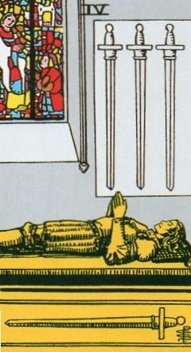
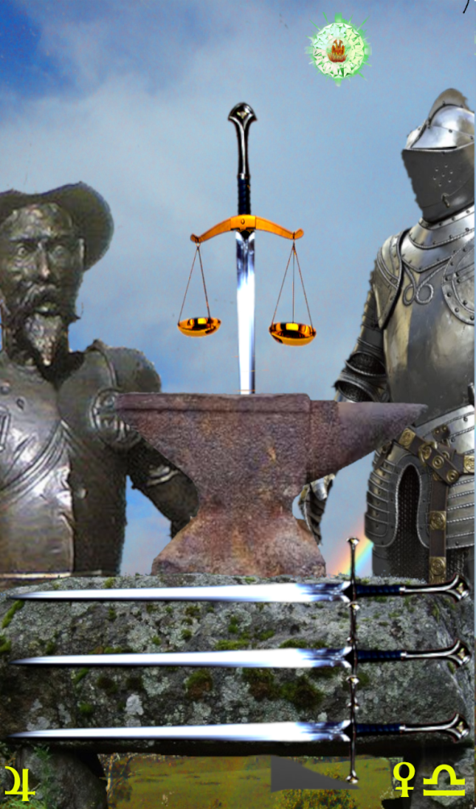
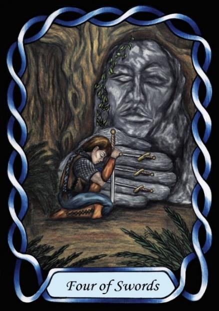

Four of Swords



Sign |
|
Seven: Relationships |
|
Sign Ruler |
|
Element |
Air - interaction |
Modality |
|
Symbol |
Scales |
Decan |
|
Decan Ruler |
|
Time |
Oct 14 - 23 |
Chivalry Libra III
The Master of relationships rises above petty selfish manipulation of others. Their Jupiter rulership makes them magnanimous and helpful of others. Their social skills are used to help others improve the lives of themselves, and others, bringing calm acceptance, and a deeper perception of true beauty behind Venus’ attractiveness.
These people embody the principles of the old code of knightly chivalry, including the literature of Don Quixote, and the song from the play “The impossible Dream”
However, this concept remains primarily an intellectual exercise. This is not the physicality of practical nights, but the abstract dream of chivalry. It includes aspects of Noblesse Oblige - the obligations of the Nobility These are the people that can be entrusted with the “right to judge, and to mete Justice” for they understand the relationship between Justice, mercy and compassion. However, this deeper understanding can lead to indecision, as the complexities of the real world impose themselves in the ideal of perfect Justice. While chivalry is represented here, it must be considered to be an aspirational goal, usually unachievable in the real world.
Goldschneider Personology
These Librans show most strongly the indecisive Libran archetype. When choosing to act, they hesitate, examining both sides and all options, yet when it comes to expressing opinions, their hesitation disappears. They are clear on what their opinions are.
RWS Imagery
A family chapel contains a sarcophagus that lies open, awaiting the knight who is off fighting a religious war, because of their strongly held opinions about right and wrong. They are the passive aspect of a strongly moral person.
Summary
The Swords represents chivalry, honour, and magnanimity in relationships, guided by Justice and moral principles.